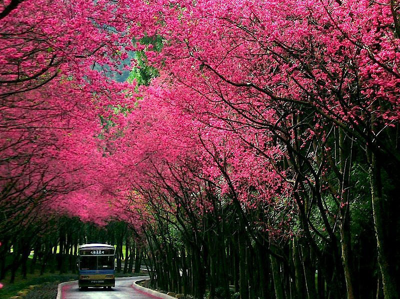

История
Традиция любования цветущей сакурой, как и многие другие современные японские праздники, возникла при императорском дворе. Это произошло ещё в третьем веке нашей эры, но особенно традиция ханами распространилась в эпоху Хэйан — придворные проводили часы под цветущими деревьями, наслаждаясь лёгкими напитками, салонными играми и складыванием стихов.
Вначале ханами посвящали цветению горной сливы. Возможно, потому, что слива начинает цвести раньше сакуры и тем самым становится первым по времени воплощением возрождающейся жизни. Но у первенства горной сливы могла быть и другая причина. Умэ завезена в Японию из Китая, и долгое время считалась одним из символов китайской культуры, чьи традиции были образцом для образованных слоёв японского общества ранней эпохи. Потом к сливе присоединилась сакура, затем другие цветы. Первенство сакуры связано с общим поворотом японского общества в конце девятого века в сторону обретения национальной самобытности. В 894 году в Японии была упразднена практика отправки посланников в Китай, к императорскому двору, и с тех пор начался процесс ослабления зависимости от влияния китайской культуры. В основном сейчас ханами посвящено сакуре, но многие почитатели ханами и сейчас в первую очередь посвящают ханами сливе, цветущей не менее красиво, чем сакура: от белого до тёмно-розового цвета.
В коротком, блистательном цветении сакуры и сливы, которое продолжается от недели до десяти дней, видели глубокий смысл: размышляя о быстротечности жизни, почитатели цветения отождествляли опадающие лепестки цветов с быстротечностью и красотой жизни, с храбростью и чистотой помыслов. В период Эдо эта традиция широко распространилась и стала неотъемлемой частью японской культуры.
В самом начале возникновения ханами цветение означало начало сезона посадки риса, и поэтому было символом урожая и возрождения жизни, наступления нового года. Духу цветов совершали подношения. Постепенно в традицию стали включаться элементы развитой культуры, и ханами превратилось в один из главных обычаев японской классической традиции. Особый расцвет ханами связан с эпохой Токугава, когда власти приказали сажать сакуру в Японии повсеместно, с целью укрепления традиций японской нации. Тогда ханами из аристократической традиции стало постепенно превращаться в общенародную.
В японских летописях «Кокинсю» изложена одна из легенд, ставшая, возможно, одним из источников ханами.
Легенда о сакуре:
Когда спустившемуся с высоких Небес на острова Японии богу Ниниги были предложены на выбор две дочери бога гор, он выбрал младшую сестру по имени Ко-но хана сакуя-химэ (яп. 子の花咲くや姫?, дословно «цветущая»), а старшую, Иванага-химэ (яп. 岩長姫?, «высокая скала») — отослал отцу, поскольку он счел её безобразной. Тогда отец разгневался и поведал о своем первоначальном замысле: если бы Ниниги выбрал себе в супруги Иванага-химэ, жизнь потомков Ниниги была бы вечной и прочной — подобно горам и камням. Но Ниниги совершил неправильный выбор, и потому жизнь его потомков, то есть всех японских людей, начиная от самих императоров и кончая простолюдинами, будет бурно-прекрасной, но недолговечной — как весеннее цветение.

Чертыковцева Татьяна 2013 ©